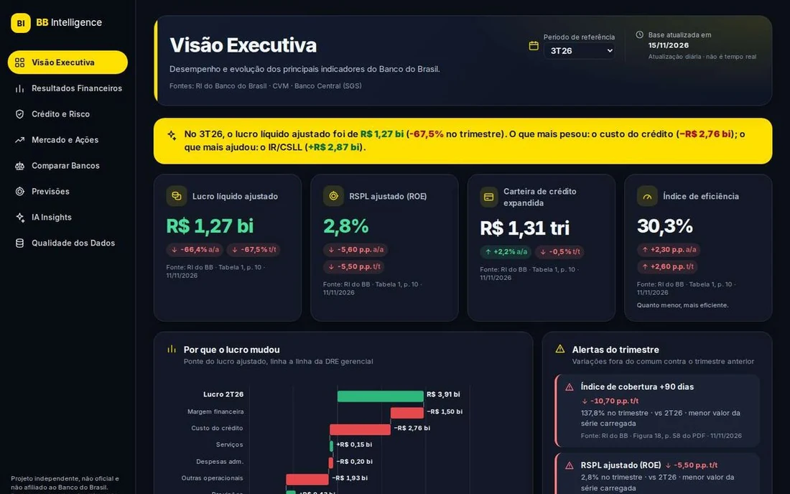
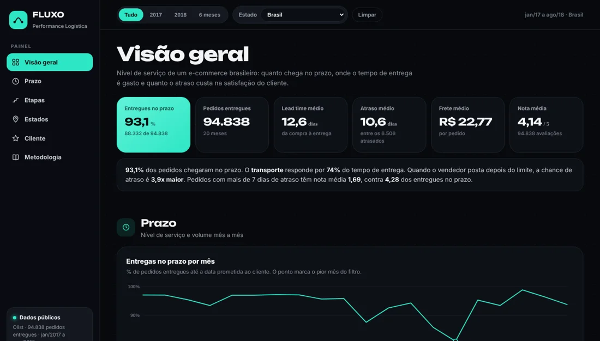
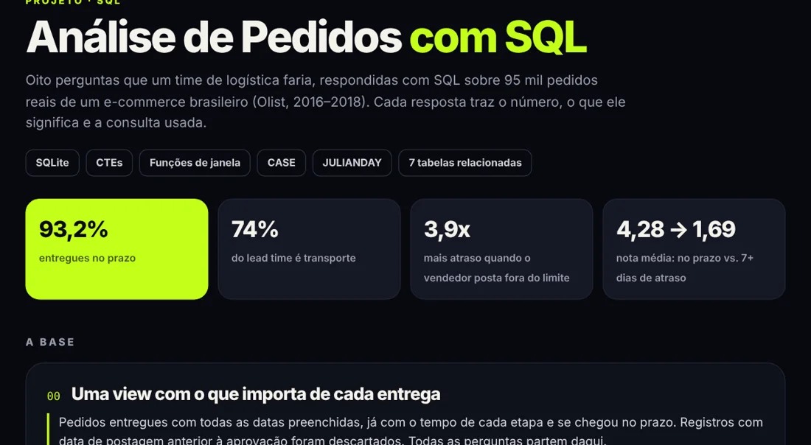
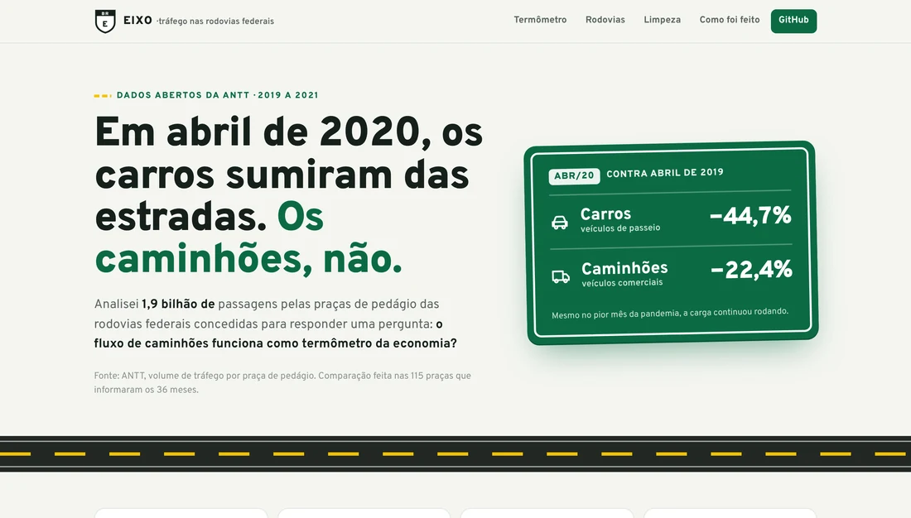

Ciência de Dados
UNINTEREstatística, programação em Python, bancos de dados e aprendizado de máquina para transformar dados em decisão.
Em andamento · previsão 01/2028Transformo rotinas operacionais em processos mais claros, ágeis e orientados por informação.
Sou Erick Amorim, profissional de logística com experiência em liderança, fulfillment e gerenciamento de risco. Hoje curso Ciência de Dados para unir vivência operacional e tecnologia na criação de decisões melhores.
Gosto de estar perto do problema, entender o processo e construir uma solução que realmente funcione para quem está na ponta. Nas horas vagas, tiro ideias do papel e transformo em apps e sites.
O que eu faço no tempo livre também vira aprendizado e, às vezes, projeto.
Tiro ideias do papel nas horas vagas, do problema à interface. Alguns estão na seção Portfólio.
Bases do Banco Central, ANAC e ANTT viram perguntas, análises e painéis publicados.
Cursos de dados, processos e ferramentas que complementam a faculdade.
Do chão da operação à análise, conectando pessoas, prazos, clientes e decisões.
Média em operação de fulfillment de alto volume, same day e full.
Atendidos na operação de fulfillment, desde a saída do primeiro pedido.
14 em São Bernardo do Campo e 4 em Manaus, na operação de gerenciamento de risco.
Monitoramento em tempo real, prazos e suporte em cargas de alto risco.
Do backoffice à promoção para o PCP, do fulfillment em alto volume aos projetos: cada etapa somou uma peça.
Duas graduações tecnológicas em andamento, unindo logística e ciência de dados, e cursos livres para aplicar no dia a dia.
Estatística, programação em Python, bancos de dados e aprendizado de máquina para transformar dados em decisão.
Em andamento · previsão 01/2028Gestão da cadeia de suprimentos, armazenagem, transporte e indicadores logísticos.
Em andamento · previsão 01/2028Cursos que complementam a faculdade de Ciência de Dados com prática em ferramentas e processos.
Dados públicos e oficiais transformados em respostas para desafios reais de operação e de negócio. Todos os projetos estão no ar.
Plataforma de inteligência econômica com dados oficiais do Banco Central: juros, inflação, câmbio e previsões de IPCA e dólar avaliadas contra o mercado.
O objetivo do NEXUS Forecast não é prever melhor que todo mundo, e sim medir quanto um modelo acerta, compará-lo com alternativas simples e com o mercado, e mostrar a incerteza real.
No backtest, cada previsão usa apenas os dados divulgados até aquela data. Usar um dado que saiu depois faria qualquer modelo parecer melhor do que é.
Em 1 mês à frente, o Focus erra menos. A partir de 2 meses, o modelo empata estatisticamente com o mercado e supera a média sazonal em 1 e 2 meses.
As faixas são calibradas pelos erros reais do backtest, para mostrar o quanto a previsão pode errar, não só um número.

No ar Abrir o sitePlataforma independente de análise do Banco do Brasil feita só com dados públicos: CVM, Banco Central e relatórios de RI. Mostra por que o lucro mudou no trimestre (ponte da DRE que fecha com o número divulgado), alertas automáticos, crédito e risco, e o BB contra Itaú, Bradesco, Santander e Caixa. Cada número aponta para a fonte, a tabela e a página de origem.
Evolução do transporte aéreo brasileiro de 2000 a 2022 com dados públicos da ANAC: passageiros, carga, taxa de ocupação, ASK × RPK e o impacto da pandemia em 2020.

Publicado Abrir o FLUXOPainel interativo com cerca de 95 mil pedidos reais da Olist: entregas no prazo, lead time por etapa, atraso por estado e o efeito do atraso na nota do cliente. Filtros por período e estado.
Abrir o site
Publicado Abrir a LUPAOito perguntas de logística respondidas com SQL: onde o tempo é gasto, quais rotas atrasam, o impacto da postagem do vendedor e se o prazo prometido é realista. Cada resposta traz a consulta e uma recomendação.
Abrir o site
Publicado Abrir o EIXO1,9 bilhão de passagens pelos pedágios das rodovias federais (ANTT, 2019 a 2021) para testar se o caminhão é termômetro da economia. Na pandemia, os carros caíram 44,7% e os caminhões, metade disso. Inclui a limpeza da base pública e a armadilha que quase gerou uma conclusão errada.
Abrir o siteEm uma operação de armazenagem, parte das mercadorias seguia sem ser bipada na separação. Sem a leitura, o sistema não confirma o que saiu, e isso abre espaço para faltas, divergências de estoque e retrabalho.
Acompanhando a rotina no chão da operação, conversando com quem está na ponta e cruzando os registros de bipagem com as divergências encontradas, para separar opinião de causa.
Projeto em andamento. Assim que as ações forem aplicadas, esta etapa ganha os números de antes e depois.
Apps e sites que eu crio nas horas vagas, pensando o produto do começo ao fim: problema, usuário, modelo de negócio e interface.
Plataforma de agendamento para barbearias. Começou com uma barbearia de São Bernardo do Campo e virou um app para várias barbearias, cada uma com sua página exclusiva e plano mensal.
Plataforma para o torcedor acompanhar o próprio time com uma experiência personalizada. Conceito: "O jogo muda. Você entende." Acompanhar o time é gratuito, com apoio opcional.
Plataforma para clubes, da várzea ao profissional: sala de troféus, elenco, jogos, artes automáticas e gestão, tudo conectado. Uma partida registrada já atualiza temporada, atletas e arte para a torcida.
Aberto a oportunidades em logística, operações e análise de dados. Mande uma mensagem pelo formulário ou use um dos canais diretos.
Obrigado pelo contato. Vou responder pelo e-mail informado.